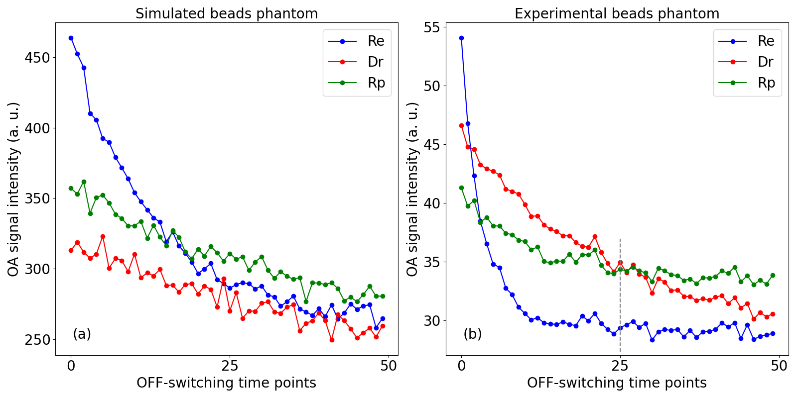
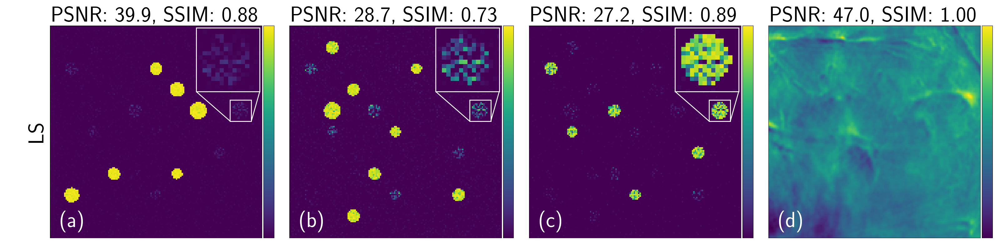
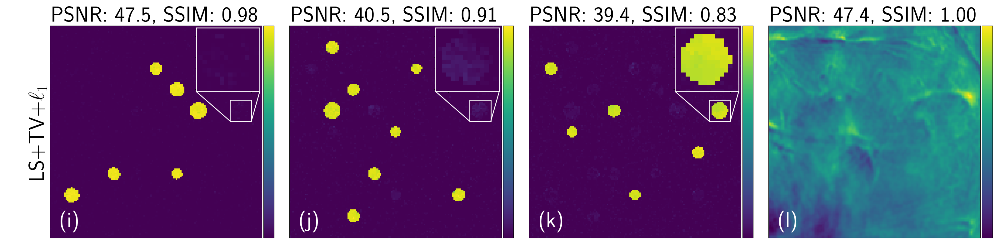
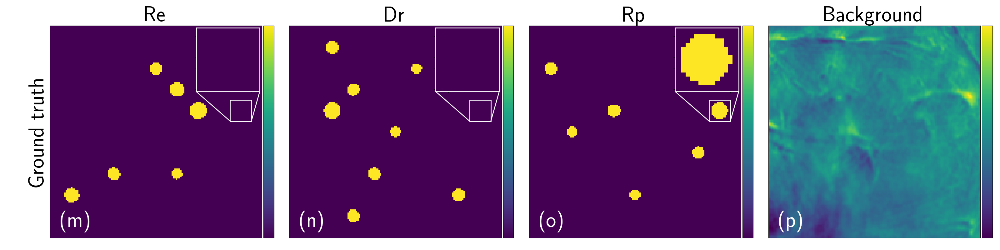
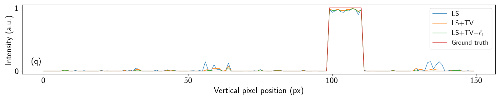
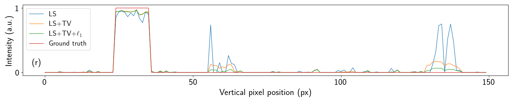
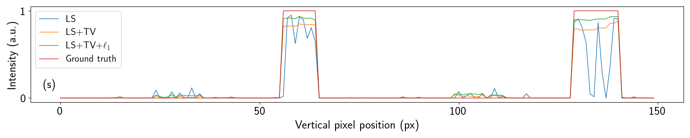
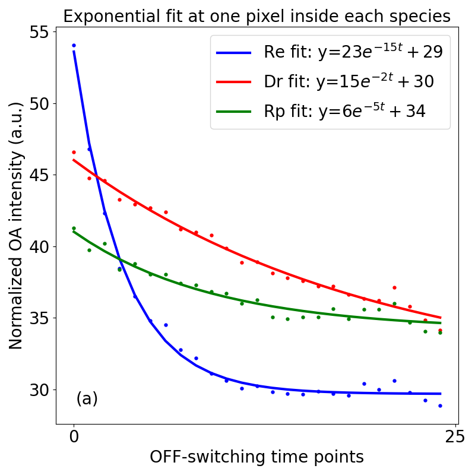
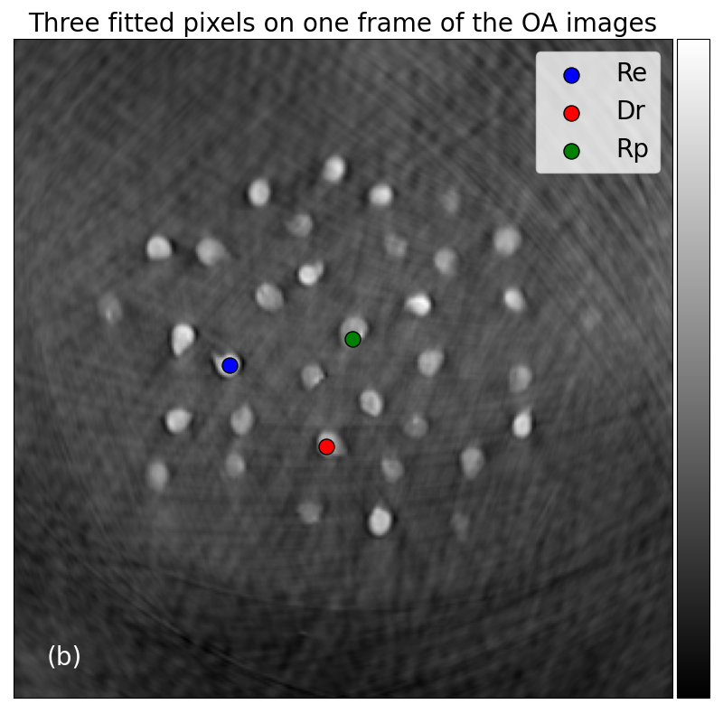
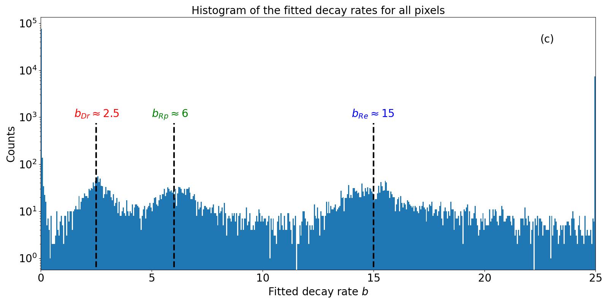

Appendix¶
Effectiveness of Regularization¶
We demonstrate effectiveness of the proposed regularization in our unmixing framework with the following simulation.

Fig. 38 Evolution of the PA signal during an OFF-switching cycle of 50 time points at three representative locations inside the three rsOAPs: Re (blue), Dr (red), and Rp (green) for the simulated (a) and experimental measurements (b) of a phantom of beads. The noise level in the measurements of the simulated beads phantom is 1% of its maximal intensity.¶



Fig. 39 Unmixing results of a simulated beads phantom mimicking the experimental beads phantom. The first three rows each contains reconstructed distribution maps of Re (first column), Dr (second column), and Rp (third column) and the non-switching background (fourth column). PSNR and SSIM of each reconstruction is indicated on top of each image. Row one (a)-(d): via least-square. Row two (e)-(h): via least-square with total variation regularization. Row three (i)-(l): via least-square with total variation and \(\ell_1\) regularization. Row four (m)-(p): ground truth. Intensities of all images are normalized to \([0, 1]\) for visual comparison.¶



Fig. 40 Comparison of the intensity profiles at the 60th row of pixels of the reporter Re (q), Dr (r), and Rp (s) for eachreconstruction method shown in Fig. 39.¶
We design a 2D numerical phantom of size \((150\times150)\) px in which we randomly insert three groups of disk targets of diameter between 7 px and 12 px that represent photo-switching reporters on a heterogeneous background. The background image is synthesized similarly as in Quantitative Unmixing Results. Each target has homogeneous intensity. The ratio of intensities between the three groups and the background (maximal) is 2:1:1:5, mimicking a blood-rich sample where the background signal is stronger than that of the reporters. Each group has the same kinetic constant as one of the three rsOAPs (see Table 5). We generate measurements simulating an OFF-switching cycle with 50 PA images of size \((150\times150)\) px, with 1% additive white Gaussian noise to mimic to experimental datasets (see Fig. 38).
We test three reconstruction approaches, namely, least-square only (LS), least-square regularized with total variation on the spatial maps of each reporter (LS+TV), and least-square regularized with TV and additionally \(\ell_1\) among the reporters (LS+TV+\(\ell_1\)). We compare in Fig. 39 the results of using these methods against the ground truth.
In all scenarios, the non-switching background is well recovered with a perfect structural similarity index (SSIM) of 1.0, though the peak signal-to-noise ratio (PSNR) varies among different methods (Fig. 38 (d), (h), and (l)).
Without any regularization, unmixing performs well only on the Re (with the largest kinetic constant among three rsOAPs), achieving an SSIM of 0.88 out of 1 (Fig. 38 (a)). However, the algorithm struggles to separate Dr and Rp. This is indicated by the presence of reporters belonging to Rp appearing in the map of the Dr (Fig. 38 (b)-(c)), leading to an SSIM of only 0.73 for Dr. In fact, Rp reporters appear in images of the first two rsOAPs (see the zoom-in area in Fig. 39 (a) and (b)).
After adding TV regularizer, we observe in Fig. 39 (e)-(g) that TV not only reduces noise inside the beads, giving a much smoother intensity distribution for each of them, but also greatly mitigates the cross-talk issue if we compare Fig. 39 (b) and (f). PSNR of each group enjoys an average boost of 7 dB and SSIM of reporters Re and Dr is improved by 7% on average.
However, there still remains a hint of cross-talk (see for example Fig. 39 (f)), which is solved by adding \(\ell_1\) regularizer to enforce sparsity at each pixel (Fig. 39 (i)-(j)). The intensity of each bead is more uniform, increasing the PSNR of each map by another 2-5 dB (see Fig. 39 (i)-(k)).
To gain more insight on the reconstruction quality, we compare intensity profiles along a representative horizontal line at the 60th row in Fig. 40 (q)-(s). We see that LS+TV+\(\ell_1\) outperforms LS only and LS+TV in the following aspects:
Signal is correctly recovered at nearly its 100% intensity with very little fluctuation inside the bead (see signals at location 55 px and 140 px in Fig. 40 (s) for a good example)
LS+TV+\(\ell_1\) does not suffer from cross-talk on locations where there should not be any signal compared to the other two approaches.
Taking signals at location 55 px and 140 px in Fig. 40 (q) and (r) as an example, LS only and LS+TV show relatively prominent peaks at these two locations where signals from the Rp should not appear at all, while LS+TV+\(\ell_1\) shows only flat tiny bumps. These details confirm that our proposed reconstruction method, LS+TV+\(\ell_1\) is effective and yields the best reconstruction results.
Optical Parameters¶
The absorption coefficient \(\mu_a\) of the background is calculated according to [181]
where \(\lambda=770\) nm is the OFF-switching wavelength, \(\varepsilon(\lambda) = 1311.88 [\text{cm}^{-1 }\cdot \text{mole}^{-1} \cdot \text{L} = \text{cm}^{-1 }\cdot \text{M}^{-1}]\) is the molar extinction coefficient of blood at 770 nm, assuming the blood we used in the phantom to be mostly composed of deoxygenated hemoglobin (Hb), \(x=3\) is the percentage of blood used in the phantom, \(150[\text{g}\cdot\text{L}^{-1}]\) is the typical mass concentration of hemoglobin within blood, and \(64500 [\text{g}\cdot\text{mole}^{-1}]\) is the molecular weight of hemoglobin. Using these values, the background is determined by \(\mu_a^{\text{bg}} = 0.21 [\text{cm}^{-1}]\).
The absorption coefficients of the protein species Re and Dr are calculated via [182]
from their molar concentration \(c_{\text{Re}}=4.23\times 10^{-6}\) [M], \(c_{\text{Dr}}=3.71\times 10^{-6}\) [M] and their respective molar extinction coefficients at 770nm \(\varepsilon_{\text{Re}}(770\text{nm})\approx 0.7\times 10^{5}\) \([\text{M}^{-1}\cdot\text{cm}^{-1}]\), \(\varepsilon_{\text{Dr}}(770\text{nm})\approx 0.4\times 10^{5}\) \([\text{M}^{-1}\cdot\text{cm}^{-1}]\). We thus have \(\mu_a^{\text{Re}} = 0.68\text{ cm}^{-1}\) and \(\mu_a^{\text{Dr}} = 0.34\text{ cm}^{-1}\).
We adopt a typical value of \(10\text{ cm}^{-1}\) for the reduced scattering coefficient \(\mu_s^{'}\) of the background, which is composed of 3% intralipid as a scatterer.
Estimation of Kinetic Constants¶
The kinetic constants \(\bar{k}\) reported in Table 5 are measured experimentally and depend on the pulse energy and the subsequent unknown light fluence \(\Phi_m\) during the measurement via \(k = \frac{\bar{k}}{\Phi_m}\), where \(k\) is the intrinsic constant. To estimate \(\Phi_m\), we first use an empirical method to retrieve the decay rates \(\{b_{\text{Re}}, b_{\text{Dr}}, b_{\text{Rp}}\}\) of each species from the experimental dataset. Then, we determine \(\Phi_m\) from
which is the geometric mean of the estimated results from all three species. To estimate \(\{b_{\text{Re}}, b_{\text{Dr}}, b_{\text{Rp}}\}\), we fit an exponential function
at each pixel to obtain a map of decay rates \(b\). Then, we approximate the OFF-switching rate of each reporter by locating the peaks in the histogram of the map of \(b\).
In Fig. 41 (a), we show an example of the fitting result at one location inside each of the three rsOAPs marked by the three dots in Fig. 41 (b) for the dataset of the experimental phantom of beads. In Fig. 41 (c), we show the result of the empirical estimate of kinetic constants. Three prominent peaks are observed, indicating decay rates of the three species. We take a value around these peaks as the empirical estimate for \(\{b_{\text{Re}}, b_{\text{Dr}}, b_{\text{Rp}}\}\). Plugging the estimated values of \(\{b_{\text{Re}}, b_{\text{Dr}}, b_{\text{Rp}}\}\) shown in Fig. 41 and \(\{\bar{k}_{\text{Re}}, \bar{k}_{\text{Dr}},\bar{k}_{\text{Rp}}\}\) in Table 5 into Eq. (106), we obtain that \(\Phi_m = 0.3\).



Fig. 41 Estimation of the decay rates for the three species based on the OFF-switching dataset of the experimental beads phantom. (a) Fitting results at three representative pixels, each inside one of the three rsOAPs. Scatter points represent original data, curves are the fitted results. (b) Location of the three pixels used in (a). PA image is the first frame of the OFF-switching series. (c) Histogram (partial) of the fitted decay rate \(b\) for all pixels in the PA image. Based on the fitting result in (a), only the part of the histogram where the values within the range (<25) is displayed.¶